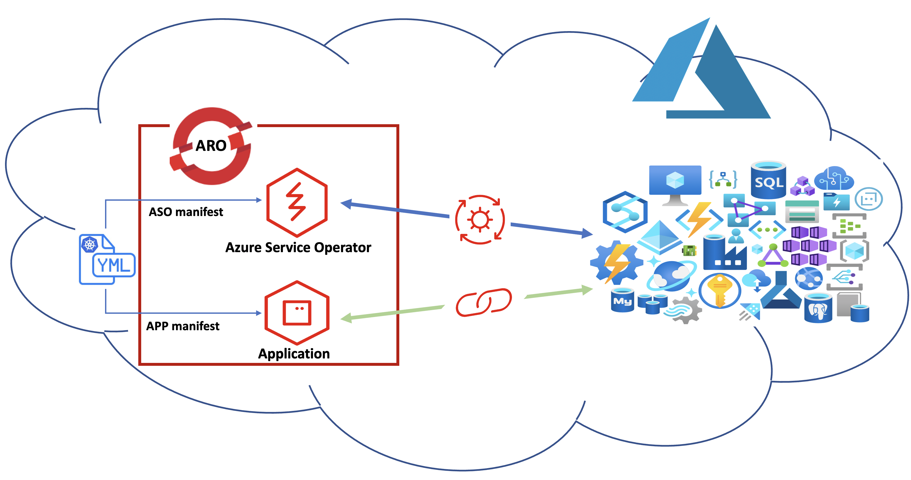

Azure Service Operator
Deploy Azure Service Operator#
Azure Service Operator(ASO) is an open-source project by Microsoft Azure. ASO gives you the ability to provision and manages Azure resources such as compute, databases, resoure group, vnet, subnet,... within the Kubernetes plane by using familiar Kubernetes tooling and primitives. ASO consists of: 1. Custom Resource Definitions (CRDs) for each of the Azure services that a Kubernetes user can provision. 2. A Kubernetes controller that manages the Azure resources represented by the user-specified Custom Resources. The controller attempts to synchronize the desired state in the user-specified Custom Resource with the actual state of that resource in Azure, creating it if it doesn't exist, updating it if it has been changed, or deleting it.

We deploy ASO on an ARO cluster to provision and manage Azure resources. In the next part we use ASO to provision a Cosmos database. To install ASO we need:
- A SP(service principal) with right permission.
- A certificate: We use cert-manager to issue certificate
Install and run ASO on your ARO cluster#
- Create an Azure Service Principal to grant ASO permissions to create resources in your subscription
An Azure service principal is an identity created for use with applications, hosted services, and automated tools to access Azure resources.
bash
AZURE_TENANT_ID="$(az account show -o tsv --query tenantId)"
echo "Azure Tenant ID $AZURE_TENANT_ID"
AZURE_SUBSCRIPTION_ID="$(az account show -o tsv --query id)"
echo "Azure subscription ID $AZURE_SUBSCRIPTION_ID"
AZURE_SP="$(az ad sp create-for-rbac -n wksp-sp-$RANDOM --role contributor --scopes /subscriptions/$AZURE_SUBSCRIPTION_ID -o json )"
echo " Azure SP ID/SECRET $AZURE_SP"
AZURE_CLIENT_ID="$(echo $AZURE_SP | jq -r '.appId')"
echo "SP ID $AZURE_CLIENT_ID"
AZURE_CLIENT_SECRET="$(echo $AZURE_SP | jq -r '.password')"
echo "SP SECRET $AZURE_CLIENT_SECRET"
- Create a secret for ASO
cat <<EOF | oc apply -f -
apiVersion: v1
kind: Secret
metadata:
name: azureoperatorsettings
namespace: openshift-operators
stringData:
AZURE_TENANT_ID: $AZURE_TENANT_ID
AZURE_SUBSCRIPTION_ID: $AZURE_SUBSCRIPTION_ID
AZURE_CLIENT_ID: $AZURE_CLIENT_ID
AZURE_CLIENT_SECRET: $AZURE_CLIENT_SECRET
EOF
-
Install cert-manager operator
-
Create Namespace for cert-manager-operator
-
Create operator group
-
Create subscription
cat <<EOF | oc apply -f - apiVersion: operators.coreos.com/v1alpha1 kind: Subscription metadata: name: openshift-cert-manager-operator namespace: openshift-cert-manager-operator spec: channel: tech-preview installPlanApproval: Automatic name: openshift-cert-manager-operator source: redhat-operators sourceNamespace: openshift-marketplace startingCSV: openshift-cert-manager.v1.7.1 EOF -
Wait for cert-manager operator to be up and running Note: this can take a few minutes
-
-
deploy ASO v2 on the ARO* cluster*
helm repo add aso2 https://raw.githubusercontent.com/Azure/azure-service-operator/main/v2/charts
helm upgrade --install --devel aso2 aso2/azure-service-operator \
--create-namespace \
--namespace=azureserviceoperator-system \
--set azureSubscriptionID=$AZURE_SUBSCRIPTION_ID \
--set azureTenantID=$AZURE_TENANT_ID \
--set azureClientID=$AZURE_CLIENT_ID \
--set azureClientSecret=$AZURE_CLIENT_SECRET
Note: It takes up to 5 min for ASO operator to be up and running.
There are pods in the azureserviceoperator-system namespace with two containers, run the following command to check the logs will likely show a string of ‘TLS handshake error’ messages as the operator waits for a Certificate to be issued, but when they stop, the operator will be ready.
Watch the timestamps for the logs, when the logs stop scrolling you are ready.
Grab another coffee, mingle a little bit and come back and check if the certificate has been issued.
Check ASO operator